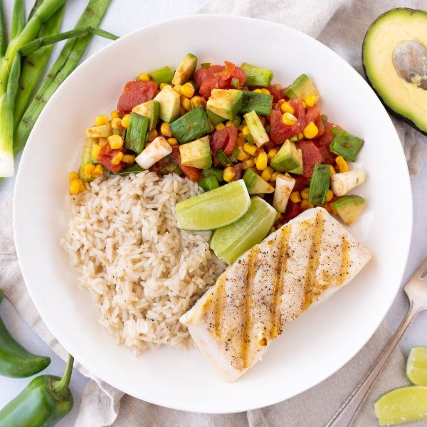

Grilled Halibut with Cumin Rice & Green Onion-Avocado Salsa

Total Time
35 min
Nutrition (Per Serving)
656.9 kcalCalories
41.4 gProtein
71.2 gCarbs
25.5 gFat
Full nutrition table
| Calories | 656.9 kcal |
| Total fat | 25.5 g |
| Saturated fat | 3.9 g |
| Trans fat | 0 g |
| Cholesterol | 83.4 mg |
| Sodium | 154.8 mg |
| Carbohydrates | 71.2 g |
| Fiber | 13.9 g |
| Sugars | 8.8 g |
| Protein | 41.4 g |
| Potassium | 1923.5 mg |
| Calcium | 134.6 mg |
| Iron | 5.2 mg |
| Vitamin A | 1557.8 IU |
| Vitamin C | 57.1 mg |
| Vitamin D | 323.2 IU |
Cookware
Ingredients
- 2avocados
- 2 (14.5 oz) cansdiced tomatoes
- 2 cupsfrozen corn
- 2 clovesgarlic
- 1 small bunchgreen onions (scallions)
- 1 ½ lbhalibut fillet
- 2jalapeño peppers
- 1 cupjasmine rice
- 1lime
- black pepper
- cumin, ground
- extra virgin olive oil
- paprika
- salt
Steps
- Peel and mince garlic; place in a medium saucepan.2 cloves garlic
- Using a strainer or colander, rinse the rice under cold, running water, then drain and transfer to the saucepan with the garlic. Add water and spices; bring the mixture to a boil over high heat.1 cup jasmine rice
2 cup water
1 tsp cumin, ground
½ tsp salt
¼ tsp black pepper - Meanwhile, wash and dry the fresh produce.1 small bunch green onions (scallions)
2 avocados
2 jalapeño peppers
1 lime - Once the liquid comes to a boil, stir the mixture, cover the saucepan, and reduce heat to low. Cook rice until liquid is fully absorbed, 15-18 minutes. Once done, remove rice from the heat and let it stand, still covered, for 5 minutes.
- Place corn in the colander and run under hot water (from the tap); set aside to drain.2 cups frozen corn
- Preheat a grill pan, outdoor grill, or regular skillet over medium-high heat.
- While the grill pan heats up, trim green onions.
- Once the grill pan is hot, coat with oil. Add green onions and grill, turning occasionally, until charred and tender, about 5 minutes. Remove to a cutting board to cool slightly.2 tsp extra virgin olive oil
- While the onions are grilling, halve and pit the avocados; scoop out the flesh with a spoon and small dice. Transfer to a medium bowl.
- Quarter jalapeño peppers lengthwise; seed and remove ribs with a spoon. Finely dice and add to the bowl with the avocado. (Be careful with jalapeños; do not touch your eyes and ensure you wash your hands after handling or wear gloves while preparing.)
- Drain tomatoes and add to the bowl along with the corn and spices; stir to combine the salsa and set aside.2 (14.5 oz) cans diced tomatoes
½ tsp paprika
½ tsp salt
¼ tsp black pepper - Pat halibut dry with paper towels and place on a plate; season with salt and pepper on both sides.1 ½ lb halibut fillet
1 tsp salt
½ tsp black pepper - Return grill pan to medium-high heat and coat with more oil. Add halibut and grill, flipping once, until fish flakes easily with a fork, 4-5 minutes per side. Remove from heat.4 tsp extra virgin olive oil
- Meanwhile, chop grilled onions into 1-inch pieces, add to the salsa, and gently stir to combine.
- Cut lime into wedges.
- To serve, divide rice, salsa, and halibut between plates. Squeeze lime over top and enjoy!